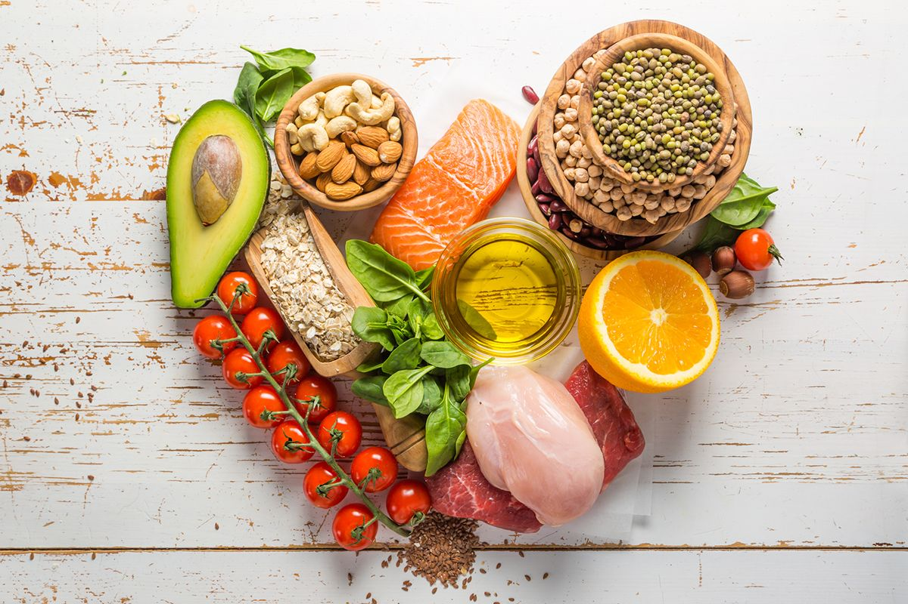
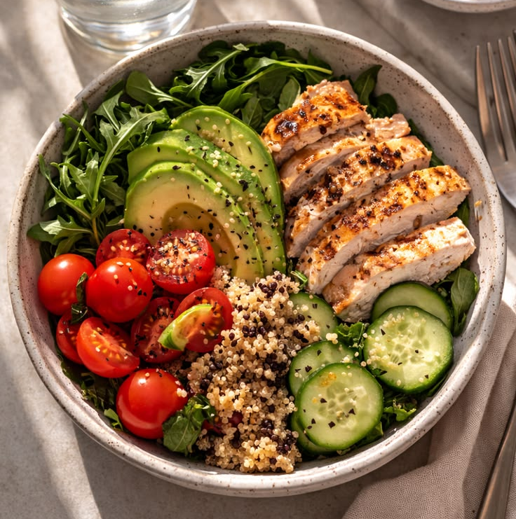

Правильное питание — это не строгие диеты, а сбалансированный подход к еде, который помогает поддерживать здоровье, энергию и хорошее самочувствие. Основная цель ПП — баланс белков, жиров, углеводов и достаточное количество витаминов.
- Питание играет ключевую роль в поддержании здоровья и благополучия человека и населения в целом, а нездоровое питание во многом способствует развитию заболеваний и инвалидности.
- Сбалансированный рацион помогает защитить организм от любых проявлений неполноценного питания, а также от неинфекционных заболеваний (НИЗ), включая диабет, сердечно-сосудистые заболевания, инсульт и рак.
- Навыки здорового питания формируются у человека с раннего возраста: так, грудное вскармливание помогает ребенку расти здоровым и стимулирует развитие когнитивных способностей.
- Пищевые привычки и предпочтения, сформированные в детстве и подростковом возрасте, зачастую сохраняются и во взрослой жизни.
- Здоровье пиgoogle
тание может быть разным, но должно отвечать четырем основополагающим принципам: достаточность, сбалансированность, умеренность и разнообразие.
- Здоровое питание предполагает также употребление безопасных пищевых продуктов, в которых не содержится вредных микробиологических и химических примесей.
- Основу любого сбалансированного рациона составляют разнообразные натуральные и минимально переработанные пищевые продукты с низким содержанием вредных жиров, свободных сахаров и натрия.

В доказательство наших слов, мы предоставим вам отзывы наших постоянных читателей.
Важно употреблять в пищу достаточное количество пищевой клетчатки. Ее содержание довольно высоко в таких овощах, как капуста и морковь. Вы можете употреблять эти овощи для восполнения запасов полезной клетчатки, если, конечно, нет проблем с переносимостью этих продуктов. Для общей профилактики можно использовать клетчатку в виде отрубей. Хорош в этом плане и цельнозерновой хлеб, который чаще всего хорошо усваивается организмом.
Полезно употребления свежих сезонных фруктов и овощей. Известно, что помидоры, которые человек съедает в июле или августе, в их сезон, и те, что он потребляет зимой и весной – это очень разные помидоры. Для выращивания овощей и фруктов в промышленных масштабах используют удобрения и пестициды, а продукты без добавок выращивают лишь на дачных и приусадебных огородах и в садах. Также уменьшается использование удобрений и добавок в сезон, потому что солнце дает колоссальную силу для роста и быстрого созревания фруктов и овощей. Известно, что сентябрь – это сезон для бахчевых, в октябре – хурма, в ноябре поспевают цитрусовые (мандарины, апельсины и т.д.), а потом наступает слепой период. Далее, весна – это сезон зелени и т.д. Для соблюдения принципов здорового питания нужно обязательно учитывать эти нюансы: желательно, чтобы потребление фруктов и овощей было по сезону. В этом вопросе важна польза.
Если вы живете, например, в Санкт-Петербурге, то здесь прием витамина D логично проводить с сентября по май. Безопасные дозировки подбираются индивидуально врачом. Чтобы получить назначение витамина D, необходимо обратиться к терапевту и сдать анализ, по результатам которого врач подберет необходимую дозировку. На нее будет влиять также вес, пол, возраст пациента и некоторые другие факторы. Самостоятельно «назначать» себе витамин D не рекомендуется. В таких ситуациях бывают случаи передозировки, когда люди потребляют по 10 тысяч и более единиц в день. Это опасно и может спровоцировать нарушение обмена веществ.
Вопрос количества красного мяса в рационе тоже сугубо индивидуален. Потому что кому-то его нужно больше, например, когда у человека анемия, железодефицитная анемия, есть проблемы с белковым составом, проблемы низкого веса. Полностью исключать мясные продукты считается не очень правильным, хотя, безусловно, в каждом случае нужно смотреть на питание индивидуально.
Молоко в питании – это важная тема. Сейчас с каждым годом растет процент населения с непереносимостью лактозы. В практике гастроэнтерологов-диетологов часто бывают дни, когда более чем половине пришедших на прием пациентов врач советует исключить из рациона лактозу. Восприимчивость организма к лактозе происходит посредством клинической оценки (специалисту часто эти признаки видны уже на первом приеме) и по результатам анализов. Врачи говорят, что у поколения, рожденного в 90-е и 2000-е годы, процент непереносимости еще выше, чем у старшего поколения. Логично снижение потребления цельного молока с возрастом пациентов. Потому что лактоза у взрослых в целом усваивается хуже, чем у детей и подростков в связи с изменением ферментативных функций кишечника.
Существует миф о том, что жирную пищу потреблять вредно и ее лучше полностью исключить из рациона. В целом на питание в этом плане во многом влияет климат, в котором проживает человек. В городах, где холодно и мало солнца (например, Санкт-Петербург) исключение употребления жира необоснованно. Если вы проживаете, скажем, в солнечном Лос-Анджелесе или Афинах, то, может быть, в таком случае для сокращения или сведения к минимуму количества жирной пищи есть основания. Врачи-диетологи напоминают, что состояние иммунной и нервной систем зависит от жирности рациона. Поэтому замена всех продуктов на обезжиренные в любом климате нецелесообразна.
Сахар действительно вреден для нас – это не миф. Но, опять же, во всем важна мера. И речь тут идет о рафинированном сахаре. Диетологи рекомендуют употреблять большую часть продуктов, содержащих сахар, до 12 часов дня. А после этого времени внести в свой рацион для этого продукта некоторые ограничения.

Правильное питание жизненно важно для поддержания здоровья, долголетия и высокого уровня энергии. Сбалансированный рацион обеспечивает организм необходимыми питательными веществами, укрепляет иммунитет, предотвращает ожирение, сахарный диабет, болезни сердца и сосудов. Оно обеспечивает строительный материал для тканей, улучшает работу мозга и повышает физическую работоспособность.